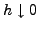
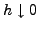

In this work we construct and analyze multigrid preconditioners for
operators of the form
, where
is the multiplication with a
relatively ``smooth'' discrete function and
is a discretization of a compact linear operator
. These
systems arise when applying interior point methods to the distributed
optimal control problem
with box constraints
on the control  . The
presented preconditioning technique is related to the one developed by
Draganescu and Dupont in [1] for the associated
unconstrained problem, and is intended for large-scale problems. As
in [1], the quality of the resulting preconditioners is shown
to increase as the resolution
 at a rate that is optimal
with respect to
. The
presented preconditioning technique is related to the one developed by
Draganescu and Dupont in [1] for the associated
unconstrained problem, and is intended for large-scale problems. As
in [1], the quality of the resulting preconditioners is shown
to increase as the resolution
 at a rate that is optimal
with respect to  if the meshes are uniform, but decreases as the
smoothness of
if the meshes are uniform, but decreases as the
smoothness of  declines. We test this algorithm first on a
Tikhnov-regularized backward parabolic equation with
declines. We test this algorithm first on a
Tikhnov-regularized backward parabolic equation with  constraints
and then on the elliptic-constrained optimization problem
constraints
and then on the elliptic-constrained optimization problem
This is joint work with Cosmin Petra from the Argonne National Laboratory.